Data ke do variables ke beech underlying quantitative trendline aur predictive relationship ko samajhna: Linear fit, slope, intercept, least-squares residuals, uncertainty intervals, aur figure-level faceting ki complete practical guide in natural Hinglish.
Data science aur statistical analytics me hum aksar aam zindagi ke aise sawaal puchte hain:
“Jo students zyada hours daily study karte hain, kya unke exam marks generally zyada aate hain? Agar kisi student ne 7.5 hours padhai ki hai, toh past data ke overall trend se hum uske kitne marks aane ka realistic estimate laga sakte hain?”
Ya phir business world ka sawaal: “Agar hum digital advertising par $10,000 extra spend karein, toh expected sales revenue kitna badhega?”
In sawaalon ka visual aur mathematical jawaab deta hai Regression Plot (Linear Regression Visualization). Ek Regression Plot aam scatter plot se ek kadam aage hota hai — ye na sirf scatter points (actual observations) ko draw karta hai, balki unke beech se guzarne wali ek best-fit trendline (Fitted Regression Line) aur uske charo taraf ek statistical uncertainty band (Confidence Interval Ribbon) bhi plot karta hai.
Scatter Points: Har dot ek real, observed student ya marketing campaign ko represent karta hai (ground truth).
Fitted Line: Ek mathematical summary hai jo batati hai ki average relationship ka slope aur direction kya hai.
Kyun line har point se nahi guzarti? Real world me natural variation aur noise hoti hai. Line individual points ko memorise nahi karti, balki overall trend ka optimal average summary provide karti hai!
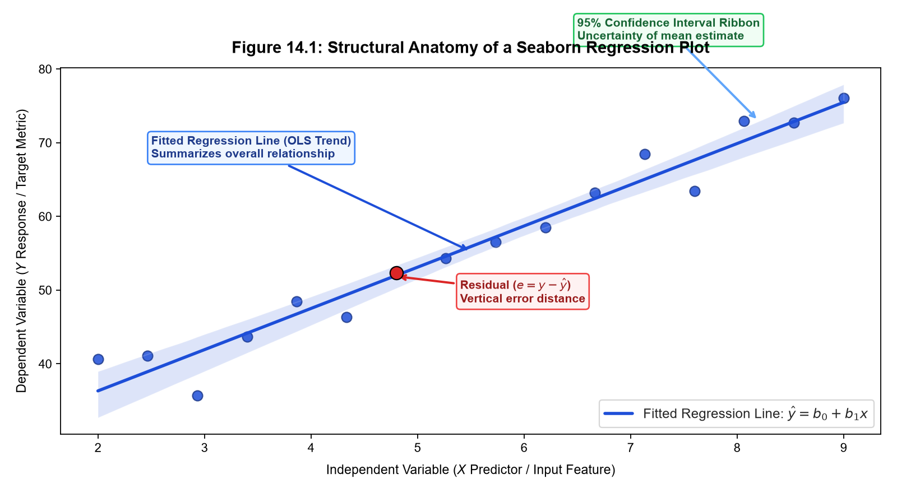
50 students ke verified study dataset par jab hum basic regression line fit karte hain, toh dekhiye points aur fitted line ka connection:
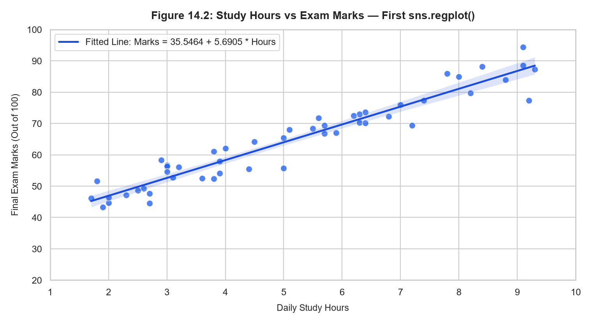
Marketing analytics me advertising spend ($K) aur product sales revenue ($K) ke beech ka relationship:
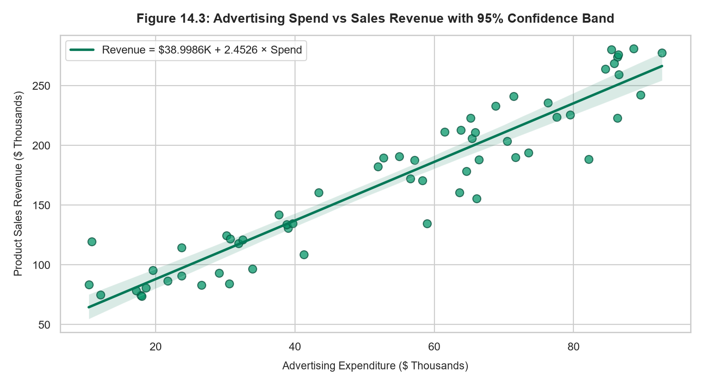
Agar do variables ke beech strong regression line draw ho rahi hai, iska matlab ye harghiz nahi hai ki X ne Y ko cause kiya hai! Ho sakta hai koi teesra hidden confounding factor (jaise student ka prior knowledge ya marketing campaign ka seasonal timing) dono ko drive kar raha ho.
Regression plot draw karne se pehle data analyst ko apne variables ki nature aur quality ko thoroughly inspect karna padta hai. Garbage In, Garbage Out — agar input data polluted hai, toh regression line mislead karegi.
| Statistical Concept | Technical Definition | Example in Student Dataset | Impact on Regression Fit |
|---|---|---|---|
| Independent Variable (\(X\)) | Predictor / Input feature jo pehle se given ya controlled hota hai. | Study_Hours (e.g. 5.5 hrs) |
Horizontal axis par map hota hai; regression assumes \(X\) is error-free. |
| Dependent Variable (\(Y\)) | Outcome / Target metric jisko hum predict ya explain karna chahte hain. | Exam_Marks (e.g. 68.4%) |
Vertical axis par map hota hai; regression \(Y\) ke errors ko minimize karta hai. |
Missing Values (NaN) |
Incomplete surveys ya unrecorded observation entries. | Unrecorded study hours | Seaborn by default dropna=True use karta hai, but unhandled NaNs sample size reduce karte hain. |
| Duplicate Records | Identical observation rows twice entered in the DataFrame. | Same student recorded twice | Artificially increases statistical significance and narrows confidence bands. |
| Measurement Scale & Units | Variables ka physical ya monetary measuring scale. | Hours vs Minutes, USD vs INR | Slope ka numerical value directly measurement units par depend karta hai! |
import pandas as pd
import numpy as np
# Load synthetic demonstration dataset
df_students = pd.read_csv("study_hours_exam_marks.csv")
# 1. Inspect data shape and schema types
print("Shape:", df_students.shape)
print(df_students.info())
# 2. Check for missing values
print("Missing values per column:\n", df_students.isna().sum())
# 3. Check for exact duplicate rows
print("Duplicate count:", df_students.duplicated().sum())
# 4. Numerical summary statistics (Five-Number Summary + Mean)
print(df_students.describe().round(2))Data quality audit confirm karne ke baad hi hum Seaborn ke regression functions call karte hain.
Seaborn me individual plot canvas par linear regression draw karne ka primary axes-level function hai sns.regplot(). Iska basic syntax bohot intuitive hai:
sns.regplot(data=df, x="Feature_Column", y="Target_Column", **kwargs)| Parameter | Default | Description & Behavior |
|---|---|---|
data |
None |
Tidy Pandas DataFrame containing input variables. |
x, y |
None |
Column names (strings) or 1D arrays for independent and dependent variables. |
ci |
95 |
Size of confidence interval for the regression estimate (e.g. 95, None to disable). |
n_boot |
1000 |
Number of bootstrap resamples used to compute the confidence interval ribbon. |
order |
1 |
Polynomial degree to fit. 1 = straight line, 2 = quadratic curve, 3 = cubic. |
robust |
False |
If True, uses statsmodels robust linear regression (Huber loss) to de-weight outliers. |
logistic |
False |
If True, fits a logistic regression sigmoid curve for binary 0/1 outcomes. |
lowess |
False |
If True, fits a non-parametric Locally Weighted Scatterplot Smoothing curve. |
scatter |
True |
If False, hides individual scatter dots and renders only the fitted line. |
fit_reg |
True |
If False, disables regression line fitting and renders only the scatter points. |
scatter_kws |
None |
Dictionary of keyword arguments passed directly to plt.scatter (e.g. alpha, s). |
line_kws |
None |
Dictionary of keyword arguments passed directly to plt.plot (e.g. color, linewidth). |
ax |
None |
Target Matplotlib axes object for multi-plot subplot placement. |
import seaborn as sns
import matplotlib.pyplot as plt
import pandas as pd
# Load verified dataset
df = pd.read_csv("study_hours_exam_marks.csv")
plt.figure(figsize=(9.5, 5.2))
sns.set_theme(style="whitegrid")
# Create regression plot
ax = sns.regplot(
data=df,
x="Study_Hours",
y="Exam_Marks",
color="#2563EB",
scatter_kws={"s": 55, "alpha": 0.8, "edgecolor": "white", "linewidths": 0.8},
line_kws={"linewidth": 2.2, "color": "#1D4ED8"}
)
plt.title("Study Hours vs Exam Marks (sns.regplot)", fontweight="bold")
plt.xlabel("Daily Study Hours")
plt.ylabel("Final Exam Marks (Out of 100)")
plt.tight_layout()
plt.show()Verified Numerical Summary: Is dataset me total 50 students hain. Study hours ka mean 5.07 hours hai aur average exam mark 64.42 hai. Calculated slope +5.6905 hai, jiska matlab hai ki har 1 extra hour padhne par average marks approx 5.69 points badhte hain!
Simple linear regression model ek straight line ka algebraic relationship form karta hai:
$$\hat{y} = b_0 + b_1 x$$
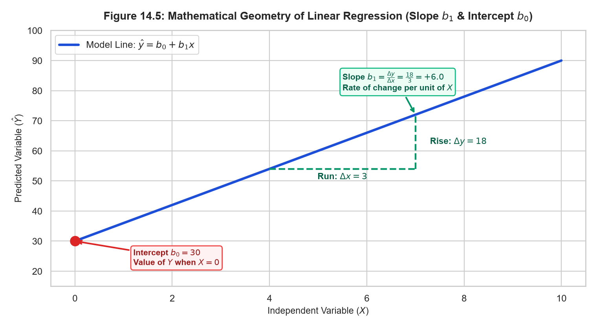
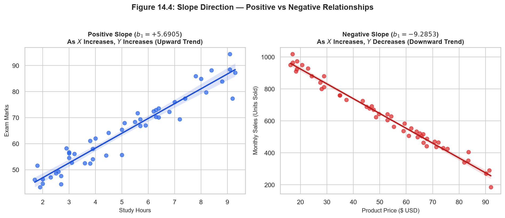
from scipy import stats
import numpy as np
import pandas as pd
df = pd.read_csv("study_hours_exam_marks.csv")
# Method 1: Using scipy.stats.linregress
slope, intercept, r_value, p_value, std_err = stats.linregress(df["Study_Hours"], df["Exam_Marks"])
print(f"Calculated Slope (b1): {slope:.4f}")
print(f"Calculated Intercept (b0): {intercept:.4f}")
print(f"Pearson Correlation (r): {r_value:.4f}")
print(f"R-squared (R²): {r_value**2:.4f}")
# Prediction for 6.0 study hours:
predicted_marks = intercept + slope * 6.0
print(f"Predicted Marks for 6.0 Hours: {predicted_marks:.2f}")Hamara calculated intercept 35.5464 hai. Theoretically ye batata hai ki agar koi student 0 ghante padhe toh uske expected marks ~35.5 honge. Lekin agar data range me 0 hours ka koi student nahi hai, toh intercept sirf ek mathematical anchor hota hai — isko blindly literal absolute truth nahi maanna chahiye (Extrapolation Danger)!
Data science me question uthta hai: “Agar hazaron different lines scatter plot ke beech se pass ho sakti hain, toh Seaborn specifically usi ek line ko Best Fit Line kyun manta hai?”
Iska mathematical rule hai Ordinary Least Squares (OLS). OLS algorithm har observation point aur candidate line ke beech vertical distance (residual) calculate karta hai aur un sabhi errors ke squares ka sum karta hai:
$$\text{Sum of Squared Residuals (SSR)} = \sum_{i=1}^n (y_i - \hat{y}_i)^2 = \sum_{i=1}^n [y_i - (b_0 + b_1 x_i)]^2$$
Best-fit line wahi unique line hoti hai jo pure universe me is SSR ko mathematically minimum (sabse chhota) kar deti hai!
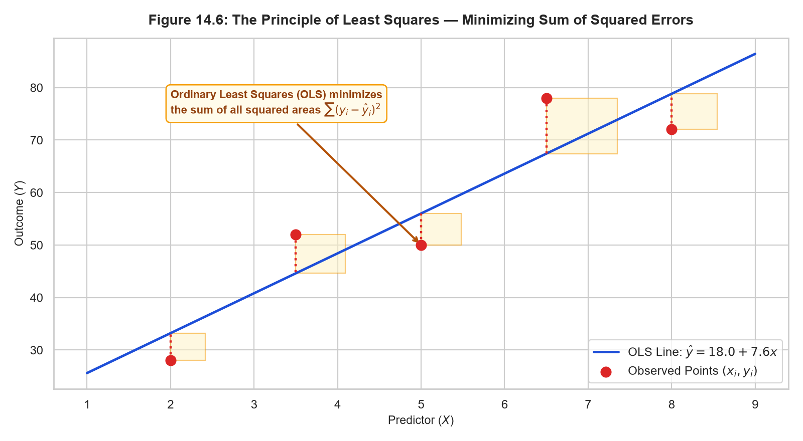
$$b_1 = \frac{\sum (x_i - \bar{x})(y_i - \bar{y})}{\sum (x_i - \bar{x})^2}, \quad b_0 = \bar{y} - b_1 \bar{x}$$
import numpy as np
import pandas as pd
df = pd.read_csv("study_hours_exam_marks.csv")
x = df["Study_Hours"].values
y = df["Exam_Marks"].values
# Closed-form analytical OLS formula
x_bar = np.mean(x)
y_bar = np.mean(y)
b1 = np.sum((x - x_bar) * (y - y_bar)) / np.sum((x - x_bar)**2)
b0 = y_bar - b1 * x_bar
print(f"Analytical Slope b1: {b1:.4f}")
print(f"Analytical Intercept b0: {b0:.4f}")
# Verify Sum of Squared Residuals (SSR)
y_pred = b0 + b1 * x
ssr_optimal = np.sum((y - y_pred)**2)
print(f"Optimal Minimum SSR: {ssr_optimal:.2f}")Data science interview me aksar pucha jata hai: “What is a residual?”
Simple shabdon me: Residual = Actual Ground Truth minus Model Prediction.
$$e_i = y_i - \hat{y}_i$$
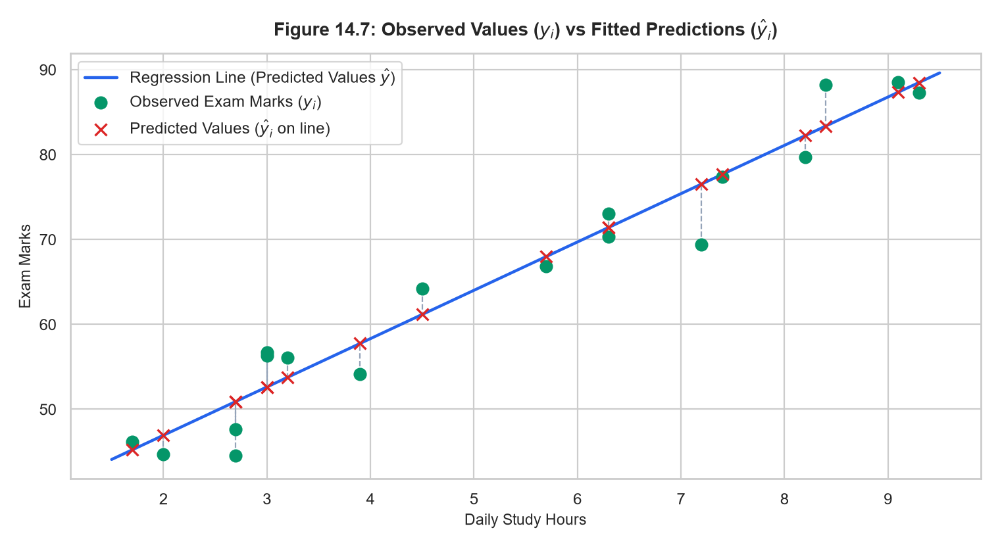
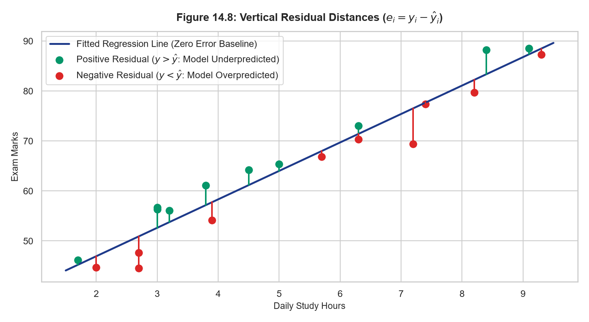
| Student ID | Study Hours (\(X\)) | Actual Marks (\(Y\)) | Predicted Marks (\(\hat{Y}\)) | Residual Error (\(e = Y - \hat{Y}\)) | Model Interpretation |
|---|---|---|---|---|---|
| STD_01 | 4.5 hrs | 63.2 | 61.15 | +2.05 | Model slightly underpredicted student's actual performance. |
| STD_08 | 7.2 hrs | 71.5 | 76.52 | -5.02 | Model overpredicted by ~5 marks (student scored less than trend). |
| STD_14 | 2.1 hrs | 51.8 | 47.50 | +4.30 | Student exceeded the expected baseline score by 4.3 points. |
| STD_22 | 8.8 hrs | 82.0 | 85.62 | -3.62 | Slight exam fatigue; performed 3.6 points below linear forecast. |
| STD_35 | 5.5 hrs | 66.8 | 66.84 | -0.04 | Near-zero residual; prediction was within 0.04 marks of reality! |
Aam beginner sirf regression line draw karke khush ho jata hai. Lekin ek professional data scientist hamesha Residual Diagnostic Plot banata hai taaki model ke assumptions ko verify kiya ja sake.
Seaborn iske liye dedicated function deta hai: sns.residplot(). Ye function automatically Y par X ka linear regression run karta hai aur horizontal zero-line (\(e = 0\)) ke around residual errors ko scatter plot karta hai:
import seaborn as sns
import matplotlib.pyplot as plt
import pandas as pd
df = pd.read_csv("study_hours_exam_marks.csv")
plt.figure(figsize=(9.5, 5.0))
sns.set_theme(style="whitegrid")
# Create residual plot
sns.residplot(
data=df,
x="Study_Hours",
y="Exam_Marks",
color="#2563EB",
scatter_kws={"s": 55, "alpha": 0.8, "edgecolor": "#1E3A8A"}
)
plt.axhline(0, color="#DC2626", linestyle="--", linewidth=1.8, label="Zero Error Baseline")
plt.title("Residual Diagnostic Plot (sns.residplot)", fontweight="bold")
plt.xlabel("Daily Study Hours")
plt.ylabel("Residuals (Actual - Predicted)")
plt.legend(frameon=True)
plt.tight_layout()
plt.show()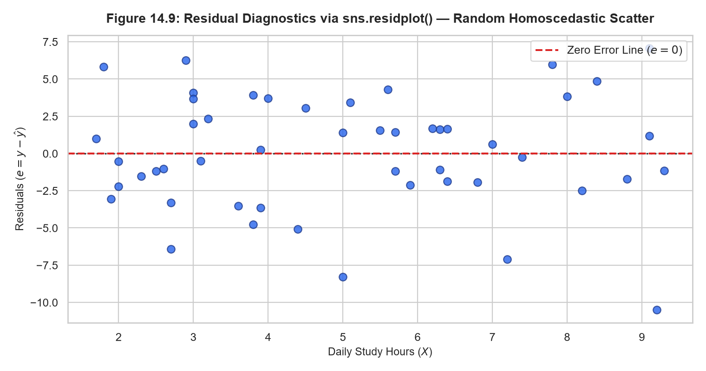
| Observed Residual Pattern | Statistical Meaning | Is Linear Model Valid? | Corrective Action Needed |
|---|---|---|---|
| Random Cloud (Uniform Scatter) | Constant variance (Homoscedasticity) — errors zero ke around symmetrically clustered hain. | ✔ Perfectly Valid | Model is safe; assumptions are satisfied. |
| Curved U-Shape ya Inverted-U | Non-linear relationship missed — data me curvature maujood hai jo straight line capture nahi kar pa rahi. | ✘ Model Flawed | Add polynomial terms (order=2) ya log transformation (logx=True). |
| Funnel / Megaphone Shape | Heteroscedasticity — X badhne par prediction error ka spread exponentially badh raha hai. | ✘ Standard Errors Biased | Apply target log transformation (\(\log(Y)\)) ya weighted least squares. |
| Isolated Distant Points | Outliers ya extreme leverage points jo baseline fit ko tilt kar rahe hain. | ⚠ Caution Required | Audit data entry errors ya use robust=True. |
Jab aap sns.regplot() run karte hain, toh regression line ke charo taraf ek translucent shaded band dikhta hai. Ye band kya communicate karta hai?
Shaded ribbon 95% Confidence Interval of the Estimated Mean Regression Line ko represent karta hai!
Iska matlab: “Agar hum is college se 50 students ke random samples 1,000 baar alag-alag collect karein aur har sample par regression line draw karein, toh 95% lines is translucent ribbon ke andar fall karengi!”
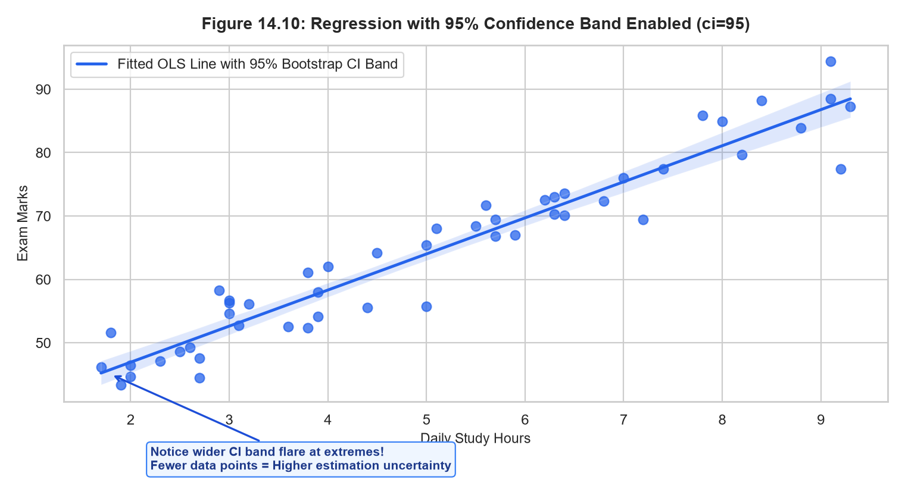
Notice kijiye ki ribbon center me sabse patla hota hai aur edges (left & right) par chauda (wide) ho jata hai. Isko statistics me Hourglass Effect kehte hain:
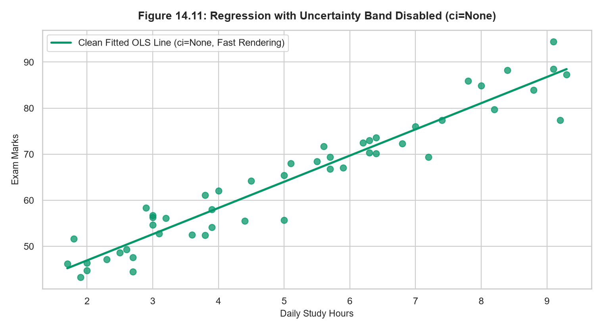
Bohot se log galati se sochte hain ki 95% naye students is shaded band ke andar aayenge. Ye bilkul galat hai!
Confidence Interval: True population average line ki uncertainty batata hai (narrow band).
Prediction Interval: Ek single individual naye student ki uncertainty batata hai jisme individual human variability include hoti hai (bohot chauda band, approx 3-4x wider than CI band)!
Real-world datasets me observations kabhi bhi perfectly straight line par nahi girtin. Data me hamesha natural random noise, measurement error, aur uncontrollable factors maujood hote hain.
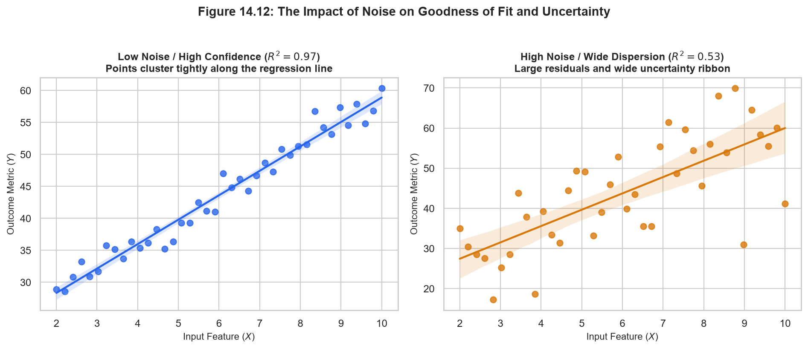
Ordinary Least Squares regression ki sabse badi kamzori ye hai ki ye outliers ke samne bohot fragile hoti hai. Chunki OLS errors ko square karta hai, isliye agar koi ek observation line se bohot door lie karti hai (especially at the edge of the X domain), toh uska squared error itna massive ho jata hai ki line poori ki poori us akele point ki taraf jhuk (tilt) jati hai!
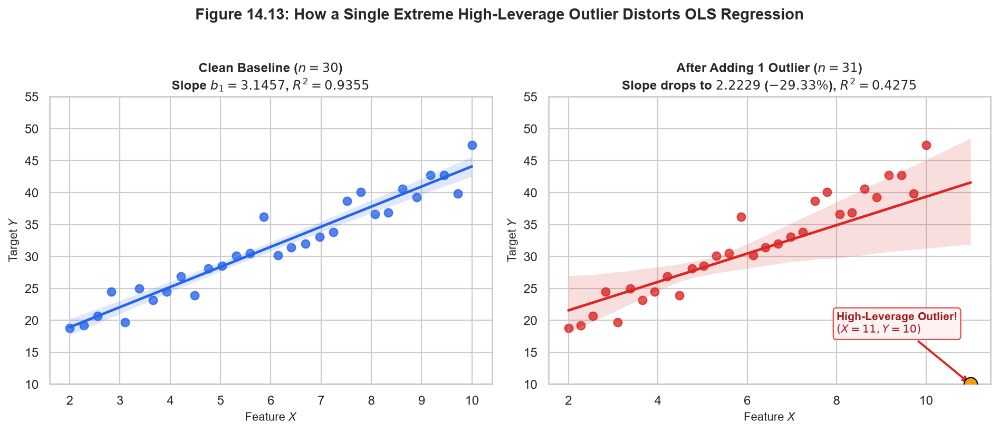
Bohot se beginners sochte hain: “Outlier model ko kharab kar raha hai, chalo row delete kar dete hain!” Ye scientific misconduct hai!
Outlier sirf tabhi remove kiya ja sakta hai jab verify ho sake ki wo ek genuine physical data-entry typo hai (e.g. kisi ne age 250 saal likh di). Agar wo genuine observation hai, toh point ko delete karne ke bajay Robust Regression use karni chahiye!
Jab dataset me natural outliers aur heavy tails maujood hon, toh standard OLS line distract ho jati hai. Is problem ko solve karne ke liye Seaborn me do powerful alternative regression techniques milti hain:
robust=True)Standard OLS squared loss (\(e^2\)) use karta hai jo extreme points ko disproportionately high weight deta hai. Robust Regression Huber loss ya Tukey biweight function use karti hai: small errors ke liye ye squared loss use karti hai, lekin extreme outliers ke errors ko linear (\(|e|\)) treat karke unka weight downweight (ghata) deti hai!
import seaborn as sns
import matplotlib.pyplot as plt
import pandas as pd
df = pd.read_csv("clean_vs_outlier_dataset.csv")
plt.figure(figsize=(9.5, 5.2))
# Robust regression downweights the high-leverage outlier
sns.regplot(
data=df,
x="Feature_X",
y="Target_Y",
robust=True, # Requires statsmodels
ci=None,
color="#059669",
line_kws={"linewidth": 2.8, "label": "Robust Huber Fit (Ignores Outlier)"}
)
plt.title("Robust Regression Resisting Extreme Outliers (robust=True)", fontweight="bold")
plt.legend(frameon=True)
plt.tight_layout()
plt.show()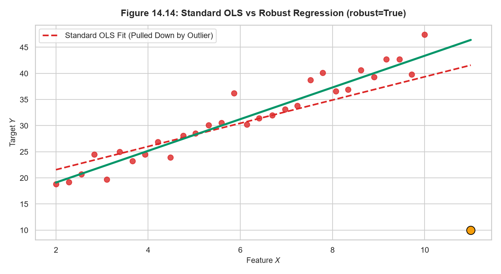
lowess=True)LOWESS ka full form hai Locally Weighted Scatterplot Smoothing. Ye koi single mathematical formula (jaise \(y = b_0 + b_1 x\)) fit nahi karta, balki har local neighborhood me data points par weighted moving average curve draw karta hai. Ye flexible non-parametric trends ko explore karne ke liye ideal hai.
Data science me ek classical mistake hoti hai: Assuming Every Relationship is Linear.
Real world me bohot se phenomena curved hote hain: e.g. Law of Diminishing Marginal Returns — advertising frequency badhane par recall score pehle tezi se badhta hai, fir plateau hota hai, aur over-saturation ke baad audience irritate hone se score decline hone lagta hai!
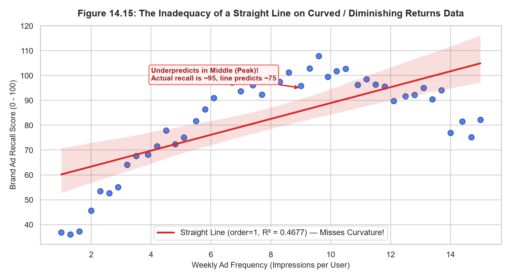
order=2Seaborn ke sns.regplot() me aap order=2 pass karke quadratic curved parabola (\(\hat{y} = b_0 + b_1 x + b_2 x^2\)) fit kar sakte hain bina kisi manual feature engineering ke:
import seaborn as sns
import matplotlib.pyplot as plt
import pandas as pd
df_nl = pd.read_csv("nonlinear_diminishing_returns.csv")
plt.figure(figsize=(9.5, 5.2))
# Fit second-degree polynomial (quadratic curve)
sns.regplot(
data=df_nl,
x="Ad_Frequency_Per_Week",
y="Ad_Recall_Score",
order=2, # Quadratic polynomial fit
color="#059669",
scatter_kws={"s": 50, "alpha": 0.75},
line_kws={"linewidth": 2.8, "label": "Quadratic Fit (order=2)"}
)
plt.title("Polynomial Regression for Diminishing Returns (order=2)", fontweight="bold")
plt.xlabel("Weekly Ad Frequency")
plt.ylabel("Ad Recall Score")
plt.legend(frameon=True)
plt.tight_layout()
plt.show()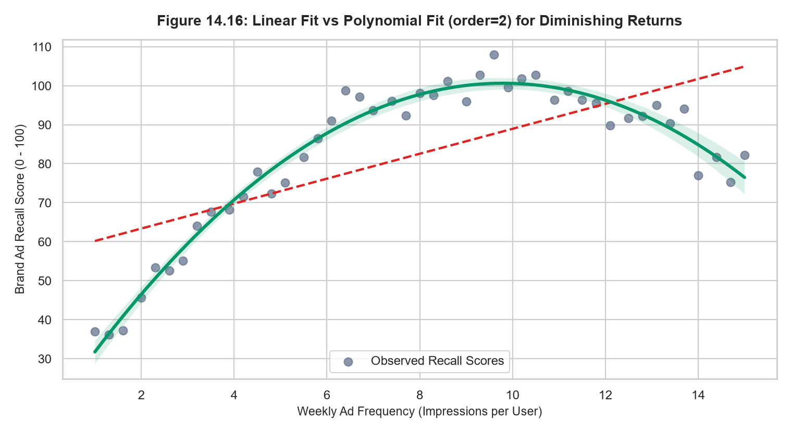
Aap soch sakte hain: “Agar order=2 achha hai, toh kya order=5 ya order=10 aur bhi behtar hoga?” Bilkul nahi!
Higher-degree polynomials random noise ko memorise karne lagte hain aur wildly oscillate karte hain (Runge's Phenomenon). Isko Overfitting kehte hain. Hamesha simplest model choose kijiye jo data ke underlying physical reality ko represent kare (Occam's Razor)!
Agar aapka target variable continuous number na ho, balki Binary 0 ya 1 ho (e.g. Student Passed=1 ya Failed=0, Customer Bought=1 ya Left=0), toh ordinary linear regression fail ho jata hai.
Kyun? Kyunki linear regression seedhi line draw karta hai jo 1.0 ke upar (e.g. 1.4 probability) aur 0.0 ke niche (e.g. -0.3 probability) chali jati hai — probability kabhi bhi 0 se kam ya 1 se zyada nahi ho sakti!
Is situation ke liye sns.regplot(..., logistic=True) use hota hai jo ek S-shaped Sigmoid probability curve fit karta hai:
$$P(Y = 1) = \frac{1}{1 + e^{-(b_0 + b_1 x)}}$$
Ye function kisi bhi input value \(x\) ko strictly \([0.0, 1.0]\) ke valid probability range me squeeze kar deta hai!
import seaborn as sns
import matplotlib.pyplot as plt
import pandas as pd
df_bin = pd.read_csv("binary_exam_pass_fail.csv")
plt.figure(figsize=(9.5, 5.2))
sns.regplot(
data=df_bin,
x="Study_Hours",
y="Passed_Exam",
logistic=True, # Fits logistic sigmoid curve
ci=None,
color="#7C3AED",
scatter_kws={"s": 65, "alpha": 0.8},
line_kws={"linewidth": 2.8}
)
plt.axhline(0.5, color="#DC2626", linestyle=":", linewidth=1.8, label="50% Pass/Fail Decision Boundary")
plt.title("Logistic Regression for Binary Exam Pass/Fail (logistic=True)", fontweight="bold")
plt.xlabel("Daily Study Hours")
plt.ylabel("Probability of Passing Exam (0.0 to 1.0)")
plt.legend(frameon=True)
plt.tight_layout()
plt.show()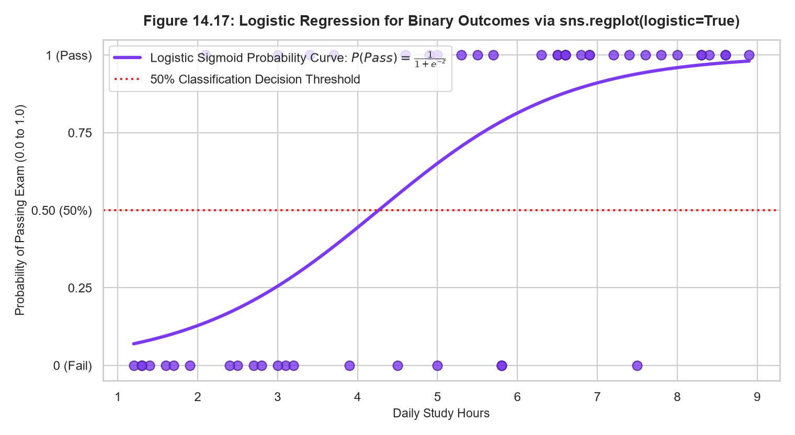
Default regression plots presentation slides ya executive dashboards ke liye thode plain lag sakte hain. Seaborn me styling do special dictionary parameters ke zariye control hoti hai:
| Dictionary Parameter | Target Under the Hood | Common Useful Customization Keys |
|---|---|---|
scatter_kws |
Matplotlib's plt.scatter() |
{"s": 75, "alpha": 0.7, "color": "#0284C7", "edgecolor": "#0369A1", "linewidths": 1.2} |
line_kws |
Matplotlib's plt.plot() |
{"color": "#1E3A8A", "linewidth": 2.8, "linestyle": "-", "label": "Trend"} |
import seaborn as sns
import matplotlib.pyplot as plt
import pandas as pd
df = pd.read_csv("study_hours_exam_marks.csv")
plt.figure(figsize=(9.5, 5.2))
sns.set_theme(style="whitegrid", font_scale=1.05)
sns.regplot(
data=df,
x="Study_Hours",
y="Exam_Marks",
color="#2563EB",
scatter_kws={"s": 75, "alpha": 0.75, "color": "#0284C7", "edgecolor": "#0369A1", "linewidths": 1.2},
line_kws={"color": "#1E3A8A", "linewidth": 2.8, "label": "Polished Trend Line"}
)
plt.title("Production-Grade Polished Regression Visualization", fontweight="bold", pad=12)
plt.xlabel("Study Duration (Hours / Day)", labelpad=8)
plt.ylabel("Final Exam Score (%)", labelpad=8)
plt.xlim(1.0, 10.0)
plt.ylim(20.0, 100.0)
plt.grid(True, linestyle="--", alpha=0.5)
plt.legend(loc="upper left", frameon=True)
plt.tight_layout()
plt.show()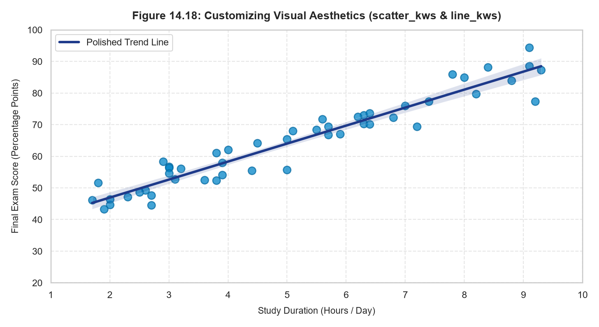
Jab aapke dataset me categories maujood hon (jaise Self-Study vs Group Study students, ya North vs South regions), toh aap har group ka alag regression behavior dekhna chahenge.
sns.regplot() (Axes-level): Ek single Matplotlib axis par plot karta hai. Ye hue, col, ya row parameters ko support nahi karta!
sns.lmplot() (Figure-level): Ek complete multi-panel canvas (FacetGrid) automatically construct karta hai. Ye group comparisons (hue) aur multi-panel faceting (col, row, col_wrap) ke liye specifically build kiya gaya hai!
hue)import seaborn as sns
import matplotlib.pyplot as plt
import pandas as pd
df_methods = pd.read_csv("student_study_methods.csv")
# lmplot creates a figure-level FacetGrid with separate regression lines per hue
g = sns.lmplot(
data=df_methods,
x="Study_Hours",
y="Final_Exam_Score",
hue="Study_Method",
palette={"Self-Study": "#2563EB", "Group Study": "#059669"},
markers=["o", "s"],
height=4.8,
aspect=1.35,
scatter_kws={"s": 55, "alpha": 0.75},
line_kws={"linewidth": 2.5}
)
g.fig.subplots_adjust(top=0.88)
g.fig.suptitle("Grouped Regression: Self-Study vs Group Study Trajectories", fontweight="bold")
g.set_axis_labels("Study Hours per Day", "Final Exam Score")
plt.show()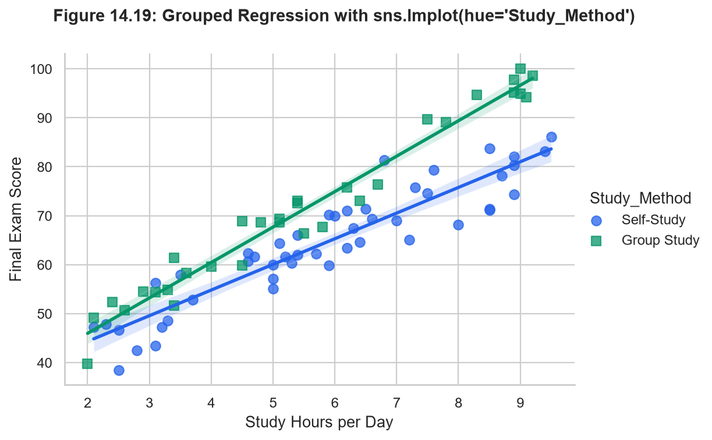
col)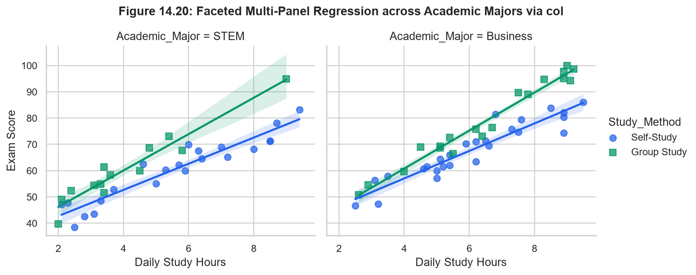
Beginners aksar Correlation aur Regression ko ek hi cheez samajh lete hain. Dono me bohot bada fundamental difference hota hai:
| Feature / Attribute | Correlation Coefficient (\(r\)) | Linear Regression (\(\hat{y} = b_0 + b_1 x\)) |
|---|---|---|
| Nature of Analysis | Symmetric association — do variables ke beech linear relation ki direction aur strength batata hai. | Directional predictive model — ek independent variable \(X\) se dependent variable \(Y\) ko estimate karta hai. |
| Mathematical Symmetry | \(Corr(X, Y) = Corr(Y, X)\) (Symmetric) | \(Regress(Y \sim X) \neq Regress(X \sim Y)\) (Non-symmetric) |
| Measurement Scale | Dimensionless number strictly between \(-1.0\) and \(+1.0\). | Slope carries physical units (e.g. Marks per Hour, USD per Ad Spend). |
| Predictive Equation | No equation — sirf connection batata hai, value predict nahi kar sakta. | Complete prediction formula provide karta hai: \(\hat{y} = b_0 + b_1 x\). |
| Goodness of Fit (\(R^2\)) | Simple correlation squared: \(R^2 = r^2\) (in simple linear regression). | Target variable \(Y\) ke variance ka kitna percentage model ne explain kiya. |
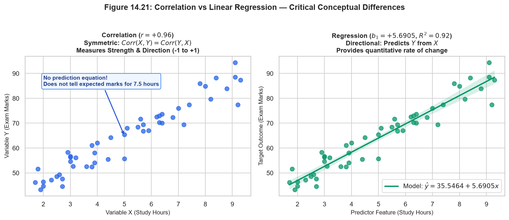
Ek classical statistical example: Summer months me Ice Cream Sales aur Swimming Pool Drowning Deaths ke beech high positive correlation aur steep regression slope hota hai! Kya iska matlab hai ki ice cream khane se log doobte hain?
Nahi! Dono variables ko ek teesra hidden Confounding Variable (Summer Temperature) drive kar raha hai. Jab garmi badhti hai toh log ice cream bhi zyada khate hain aur swimming karne bhi zyada jate hain!
Real-World Scenario: Ek university academic dean office 50 students ke study duration aur semester final exam score ka quantitative audit kar rahi hai taaki academic advising counseling ke liye benchmark guidelines banai ja sakein.
from scipy import stats
import pandas as pd
import numpy as np
df = pd.read_csv("study_hours_exam_marks.csv")
# Compute statistical regression parameters
slope, intercept, r_val, p_val, std_err = stats.linregress(df["Study_Hours"], df["Exam_Marks"])
r_squared = r_val**2
print("=== College Analytics Regression Report ===")
print(f"Sample Size (n): {len(df)}")
print(f"Slope (Marks per Hour): {slope:.4f}")
print(f"Baseline Intercept: {intercept:.4f}")
print(f"R-squared (Variance Explained): {r_squared * 100:.2f}%")
print(f"p-value: {p_val:.2e} (Statistically Significant: {p_val < 0.05})")
# Counseling Guidance:
target_marks = 80.0
needed_hours = (target_marks - intercept) / slope
print(f"Recommended study hours for achieving 80 marks: {needed_hours:.1f} hours/day")Verified Findings: \(R^2 = 92.2\%\) — iska matlab 92% exam variance study duration se explain hota hai. Target 80 marks score karne ke liye model approx 7.8 hours daily study recommend karta hai.
Limitations: Model student ki sleep quality, prior school preparation, aur mental stress ko account me nahi leta. 10 hours se zyada padhne par diminishing returns aur burnout ki wajah se marks drop bhi ho sakte hain!
Real-World Scenario: Ek D2C online retail brand ke Chief Marketing Officer (CMO) ne 60 weekly advertising campaigns ka data collect kiya hai taaki next quarter ke $250,000 ad budget ko allocate kiya ja sake.
from scipy import stats
import pandas as pd
df_ads = pd.read_csv("advertising_spend_sales.csv")
slope_ad, intercept_ad, r_ad, _, _ = stats.linregress(df_ads["Ad_Spend_K"], df_ads["Sales_K"])
print("=== E-Commerce Marketing ROI Analysis ===")
print(f"Baseline Organic Revenue: ${intercept_ad:.2f}K")
print(f"Marginal Revenue per $1K Ad Spend: ${slope_ad:.2f}K")
print(f"Marketing Efficiency Ratio: {slope_ad:.2f}x return")
# Budget Scenario: Spending $75,000 on Ads
forecast_sales = intercept_ad + slope_ad * 75.0
print(f"Forecast Sales for $75K Ad Spend: ${forecast_sales:.2f}K")Verified Metrics: Slope \(b_1 = 2.4526\) batata hai ki har $1,000 extra ad spend company ko $2,453 ka additional sales revenue generate karke deta hai (2.45x Return on Ad Spend).
Caveat: Agar competitor brands bhi simultaneously ad spend badha dein, toh ad auction bidding expensive ho jayegi aur slope decline ho jayega (Market Crowding Effect).
Real-World Scenario: Ek software product analytics team 50 SaaS subscription add-on packages ka pricing experiment audit kar rahi hai taaki Price Elasticity of Demand determine ki ja sake.
from scipy import stats
import pandas as pd
df_price = pd.read_csv("product_price_demand.csv")
# Compute regression slope for price elasticity
slope_p, intercept_p, r_p, _, _ = stats.linregress(df_price["Price_USD"], df_price["Monthly_Sales_Units"])
print("=== SaaS Pricing Elasticity Audit ===")
print(f"Price vs Demand Slope: {slope_p:.4f} units per dollar")
print(f"Correlation: {r_p:.4f}")
print(f"Demand Model: Units = {intercept_p:.1f} - {abs(slope_p):.2f} * Price")
# Optimum Revenue Estimation:
# Revenue = Price * Units = Price * (1110.8 - 9.29 * Price)
# Quadratic apex: Price_opt = -b / (2a) = 1110.8 / (2 * 9.29)
opt_price = intercept_p / (2 * abs(slope_p))
print(f"Mathematically Optimal Price for Maximum Revenue: ${opt_price:.2f}")Verified Metrics: Slope \(b_1 = -9.2853\) units per dollar batata hai ki har $1 price badhane se monthly unit sales lagbhag 9.29 units decrease ho jati hain. Correlation \(r = -0.9907\) ek exceptionally strong negative linear relationship confirm karta hai.
Revenue Optimization: Revenue maximization point calculate karne par optimal price approx $59.82 aati hai, jahan price aur volume ka product maximum cashflow generate karta hai.
Real-World Scenario: Production site reliability engineering (SRE) team microservices load testing kar rahi hai. Production servers par 200 se 4,800 concurrent requests per second bheje gaye aur API response latency (ms) measure ki gayi.
import seaborn as sns
import matplotlib.pyplot as plt
import pandas as pd
df_sre = pd.read_csv("api_load_latency_sre.csv")
plt.figure(figsize=(10, 5.5))
# Plot scatter points
plt.scatter(df_sre["Concurrent_Requests"], df_sre["Latency_ms"], color="#0284C7", s=50, alpha=0.8, edgecolor="#0369A1", label="Load Test Runs")
# Linear fit vs Polynomial fit
sns.regplot(data=df_sre, x="Concurrent_Requests", y="Latency_ms", order=1, scatter=False, ci=None,
line_kws={"color": "#DC2626", "linestyle": "--", "linewidth": 1.8, "label": "Linear Fit (Fails at Saturation Knee)"})
sns.regplot(data=df_sre, x="Concurrent_Requests", y="Latency_ms", order=2, scatter=False, ci=None,
line_kws={"color": "#059669", "linewidth": 2.8, "label": "Quadratic Fit (Captures Queuing Explosion)"})
plt.axhline(100.0, color="#DC2626", linestyle=":", linewidth=2.0, label="100ms Strict P99 SLA Limit")
plt.title("Production API Load vs Response Latency (Hockey Stick Queuing)", fontweight="bold")
plt.xlabel("Concurrent Requests per Second")
plt.ylabel("Response Latency (ms)")
plt.legend(frameon=True)
plt.tight_layout()
plt.show()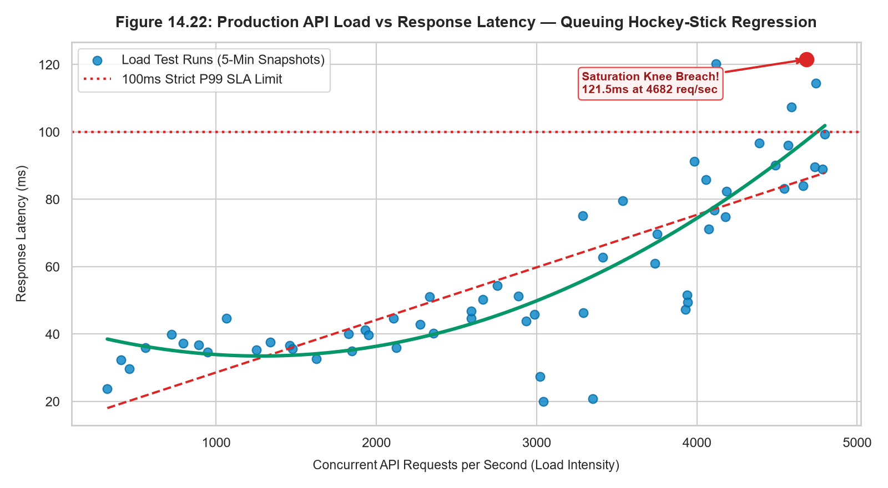
Hardware aur operating system queues (M/M/1 queuing model) strictly non-linear hoti hain. Jab tak CPU utilization 70% se kam rehta hai, latency flat 35-40ms rehti hai. Lekin jaise hi thread pool saturate hota hai, latency linear nahi balki exponential hockey-stick shape me explode karti hai. Aise systems me linear regression use karna production downtime ka risk create karta hai!
Regression analysis me errors se bachne ke liye 15 sabse common mistakes aur unke practical solutions:
| # | Common Regression Pitfall | Why It Causes Serious Errors | Recommended Best Practice Fix |
|---|---|---|---|
| 1 | Assuming Regression Proves Causation | High correlation can be driven by hidden confounders. | Acknowledge external factors; conduct controlled A/B experiments. |
| 2 | Assuming Every Relationship is Linear | Misses curved trends, diminishing returns, and saturation knees. | Inspect residual plots (sns.residplot); use order=2 or LOWESS. |
| 3 | Blindly Deleting Outliers | Biases models and hides real physical or financial risks. | Verify typos first; otherwise use robust=True. |
| 4 | Extrapolating Far Beyond Data Range | Linear assumptions fail outside observed domain boundaries. | Bound predictions strictly within \([X_{min}, X_{max}]\). |
| 5 | Confusing CI Band with Prediction Band | CI reflects uncertainty of the mean line, not individual future points. | Explain that 95% of individual points do NOT fall inside the CI band. |
| 6 | Overfitting with High Polynomial Degrees | order=5+ memorizes random noise and oscillates wildly. |
Prefer parsimonious models (order=1 or order=2 maximum). |
| 7 | Confusing regplot() with lmplot() | Passing hue or col to sns.regplot() causes errors. |
Use sns.lmplot() for faceting and multi-group categories. |
| 8 | Ignoring Residual Heteroscedasticity | Funnel-shaped residuals invalidate standard error intervals. | Apply log transformation (logx=True or \(\log(y)\)). |
| 9 | Fitting Linear Line to Binary 0/1 Outcomes | Produces impossible predictions (< 0.0 or > 1.0). | Use sns.regplot(..., logistic=True) with Sigmoid probability. |
| 10 | Literal Interpretation of Intercept at X=0 | When X=0 is impossible (e.g. 0cm height), intercept is meaningless. | Treat \(b_0\) strictly as mathematical geometry, not practical reality. |
| 11 | Assuming High \(R^2\) Proves True Model | Spurious trends and overfitted polynomials can display high \(R^2\). | Cross-validate on holdout test data; inspect residual plots. |
| 12 | Passing 'linewidth' to scatter_kws | Triggers Matplotlib alias collision with Seaborn's internal 'linewidths'. | Use scatter_kws={"linewidths": 1.2} with the trailing 's'. |
| 13 | Unsynced Facet Grid Axes | Comparing subplots with different scales gives optical illusions. | Keep sharex=True, sharey=True in sns.lmplot(). |
| 14 | Failing to Check for statsmodels | Calling robust=True without statsmodels raises RuntimeError. |
Install statsmodels before calling robust or lowess modes. |
| 15 | Ignoring Missing Data Drop Impact | Silently dropping rows can reduce statistical power and bias estimates. | Audit missing values explicitly with df.isna().sum(). |
# BUGGY: Passing 'linewidth' inside scatter_kws causes Matplotlib TypeError collision!
sns.regplot(data=df, x="Study_Hours", y="Exam_Marks",
scatter_kws={"linewidth": 1.2, "edgecolor": "white"})
# Result: TypeError: Got both 'linewidth' and 'linewidths', which are aliases of one another!# CORRECTED: Always use 'linewidths' (with trailing 's') for scatter_kws
sns.regplot(data=df, x="Study_Hours", y="Exam_Marks",
scatter_kws={"linewidths": 1.2, "edgecolor": "white", "s": 60},
line_kws={"linewidth": 2.5, "color": "#1D4ED8"})# BUGGY: Trying to group by category using sns.regplot()
sns.regplot(data=df, x="Study_Hours", y="Exam_Marks", hue="Study_Method")
# Result: TypeError: regplot() got an unexpected keyword argument 'hue'!# CORRECTED: Use figure-level sns.lmplot() for multi-group hue comparisons
g = sns.lmplot(data=df, x="Study_Hours", y="Exam_Marks", hue="Study_Method",
palette={"Self-Study": "#2563EB", "Group Study": "#059669"},
height=4.8, aspect=1.3)| Analytical Goal | Recommended Seaborn Syntax | Key Parameters to Remember |
|---|---|---|
| Basic Single Regression | sns.regplot(data=df, x="X", y="Y") |
Axes-level; defaults to ci=95 and order=1. |
| Disable Confidence Band | sns.regplot(..., ci=None) |
Renders pure line instantly without bootstrap resampling. |
| Resist Extreme Outliers | sns.regplot(..., robust=True) |
Huber loss downweights outliers; requires statsmodels. |
| Curved Diminishing Returns | sns.regplot(..., order=2) |
Fits quadratic parabolic curve \(\hat{y} = b_0 + b_1 x + b_2 x^2\). |
| Binary 0/1 Outcomes | sns.regplot(..., logistic=True) |
Fits S-shaped Sigmoid probability curve; requires statsmodels. |
| Residual Error Diagnostics | sns.residplot(data=df, x="X", y="Y") |
Plots residuals vs \(X\) around zero horizontal baseline. |
| Categorical Group Comparison | sns.lmplot(data=df, x="X", y="Y", hue="Group") |
Figure-level FacetGrid; creates distinct lines per hue category. |
| Multi-Panel Subplot Facets | sns.lmplot(..., col="Region", row="Tier") |
Splits categories across synchronized subplots. |
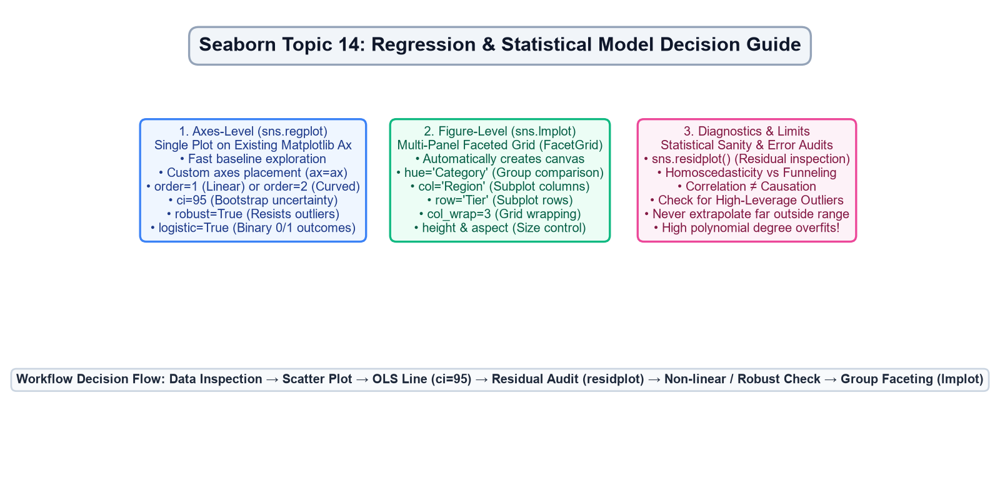
Regression plot me fitted line ka primary statistical purpose kya hota hai?
A) Har observation point ko connect karna.
B) Continuous variables ke beech overall mathematical relationship aur average rate of change ko summarize karna.
C) Missing values ko delete karna.
D) Binary 0/1 predictions ko memorize karna.
Correct Answer: B
Explanation: Regression line continuous variables ke beech overall directional trend aur quantitative slope ko summarize karti hai. Ye individual points ko connect nahi karti balki unke squared error ko mathematically minimize karti hai.
Residual error ka exact statistical formula kya hota hai?
A) \(e_i = x_i - y_i\)
B) \(e_i = y_i - \hat{y}_i\) (Observed value minus Predicted value)
C) \(e_i = \hat{y}_i - \bar{y}\)
D) \(e_i = b_0 + b_1 x\)
Correct Answer: B
Explanation: Residual ground truth observation (\(y_i\)) aur model ke prediction (\(\hat{y}_i\)) ke beech ka vertical difference hota hai.
Agar kisi student ka residual \(+6.5\) marks aata hai, toh iska kya interpretation hai?
A) Student exam me fail ho gaya.
B) Student ne model ke predicted score se 6.5 marks zyada achieve kiye (Model ne underpredict kiya).
C) Model ne student ke marks ko overpredict kiya.
D) Data corrupted hai.
Correct Answer: B
Explanation: Positive residual ka matlab hai actual value prediction se badi hai (\(y > \hat{y}\)), yaani model ne is student ke performance ko underpredict kiya tha.
Ordinary Least Squares (OLS) algorithm absolute errors ke bajay squared errors ko kyun minimize karta hai?
A) Taaki calculation slow ho sake.
B) Positive aur negative errors ke sign cancellation ko rokne aur large errors ko heavily penalize karne ke liye.
C) Squares hamesha negative hote hain.
D) Taaki intercept zero ban jaye.
Correct Answer: B
Explanation: Squaring se positive aur negative errors aapas me cancel nahi hote aur bade blunders ko heavy penalty milti hai, jisse model outliers ke प्रति sensitive rehta hai.
sns.regplot() me central line ke charo taraf translucent shaded band kya darshata hai?
A) 95% naye students is band ke andar aayenge.
B) Mean regression line ka 95% bootstrap confidence interval (uncertainty of the average trend).
C) Maximum aur minimum values ka difference.
D) Hardware sensor noise floor.
Correct Answer: B
Explanation: Shaded ribbon true population *mean line* ki estimation uncertainty ko darshata hai. Ye individual future observations ka prediction interval nahi hai.
Extreme high-leverage outliers hone par standard OLS line ko tilt hone se rokne ke liye kaunsa parameter use hota hai?
A) ignore_outliers=True
B) robust=True
C) clean_data=True
D) drop_extremes=True
Correct Answer: B
Explanation: robust=True statsmodels ke Huber loss algorithm ko call karke extreme outliers ke squared error weight ko downweight kar deta hai.
Diminishing returns ya quadratic curvature ko fit karne ke liye kaunsa parameter set kiya jata hai?
A) order=2
B) curve=True
C) degree="parabola"
D) quadratic=True
Correct Answer: A
Explanation: order=2 passing karne par Seaborn quadratic polynomial (\(\hat{y} = b_0 + b_1 x + b_2 x^2\)) fit karta hai.
Target outcome agar binary 0 ya 1 ho (jaise Exam Pass ya Fail), toh kaunsa mode use karna chahiye?
A) order=1
B) logistic=True
C) binary_fit=True
D) probability_mode=True
Correct Answer: B
Explanation: logistic=True S-shaped Sigmoid probability curve fit karta hai jo strictly 0.0 aur 1.0 ke beech valid probabilities provide karta hai.
Multi-panel subplots (col aur row) aur categorical grouping (hue) ke liye kaunsa function natively designed hai?
A) sns.regplot()
B) sns.lmplot()
C) plt.regplot()
D) df.plot.regression()
Correct Answer: B
Explanation: sns.lmplot() figure-level interface hai jo FacetGrid ke through hue, col, aur row ko seamlessly handle karta hai. sns.regplot() axes-level hai aur hue support nahi karta.
Agar do variables ke beech strong regression slope (\(b_1 = +4.8\), \(R^2 = 0.94\)) hai, toh iska scientific conclusion kya hai?
A) X ne definitely Y ko cause kiya hai.
B) Do variables ke beech strong linear association hai, lekin causation prove karne ke liye controlled experiments aur confounding variable audits zaroori hain.
C) Data 100% error-free hai.
D) Y ne X ko create kiya hai.
Correct Answer: B
Explanation: Statistical golden rule: Correlation & Regression do not prove causation. Hidden confounding factors dono variables ko simultaneously drive kar sakte hain.
Figure 14.4 me study hours ka slope +5.6905 hai aur product price ka slope -9.2853 hai. Negative slope ka real-world business meaning kya hai?
Expert Interpretation: Negative slope microeconomics ke Law of Demand ko faithfully illustrate karta hai. Har $1 product price badhane se monthly unit sales approx 9.29 units drop ho jati hain. Pricing managers is rate of change se optimal revenue maximize karne ke liye price elasticity calculate kar sakte hain.
Figure 14.9 me residuals horizontal line (0) ke charo taraf bina kisi clear pattern ke random cloud ki tarah scattered hain. Iska statistical validation me kya significance hai?
Expert Interpretation: Random residual scatter prove karta hai ki Homoscedasticity aur Linearity ke core regression assumptions satisfy ho rahe hain. Agar yahan U-shape ya funnel shape dikhti, toh linear model invalid ho jata.
Figure 14.13 me sirf ek single outlier point (11, 10) add karne se slope 3.15 se gir kar 2.22 ho gaya (-29.3% drop) aur \(R^2\) 0.94 se gir kar 0.43 ho gaya. Ye point itna destructive kyun prove hua?
Expert Interpretation: Ye point x-axis ke extreme edge par lie karta hai (\(X=11\)), isliye iske paas massive High Leverage hai. OLS algorithm errors ko square karta hai, isliye is akele point ke giant error ko minimize karne ke liye pure dataset ki regression line us akele point ki taraf jhuk gayi!
Figure 14.16 me straight line fit (\(R^2 = 0.4677\)) ke mukable quadratic fit (\(R^2 = 0.9637\)) itna superior kyun perform karta hai?
Expert Interpretation: Ad frequency me diminishing returns aur audience fatigue hoti hai. Shuru me frequency badhane se recall badhta hai, lekin 9.8 impressions ke baad saturation aur decay start ho jati hai. Straight line curvature capture nahi kar sakti, jabki order=2 parabola is turning point ko accurately model karta hai.
Figure 14.22 me server load 3,000 req/sec cross karne par latency 100ms SLA limit ko todte hue 121ms tak pahunch jati hai. Linear regression line is danger ko reveal kyun nahi kar pa rahi?
Expert Interpretation: Linear regression pure 0-5,000 range ka single average slope draw karti hai, jisse low-load data (90% of samples) slope ko artificially flatten rakhta hai aur saturation zone me latency ko drastically underpredict karta hai. SRE teams ko aise systems me hockey-stick queuing models use karne chahiye.
Task: Ek synthetic 40-point dataset banaiye jisme \(y = 15 + 3.5x + \epsilon\) ho. sns.regplot() use karke regression line plot kijiye jisme confidence band 90% ho (ci=90), scatter points red circles hon with black edges, aur trend line bold green ho.
import seaborn as sns
import matplotlib.pyplot as plt
import pandas as pd
import numpy as np
np.random.seed(42)
x = np.linspace(1, 10, 40)
y = 15.0 + 3.5 * x + np.random.normal(0, 3.0, 40)
df = pd.DataFrame({"X": x, "Y": y})
plt.figure(figsize=(9, 5))
sns.regplot(
data=df,
x="X",
y="Y",
ci=90, # 90% confidence interval
scatter_kws={"s": 65, "color": "#DC2626", "edgecolor": "black", "linewidths": 1.0, "alpha": 0.8},
line_kws={"color": "#059669", "linewidth": 2.8, "label": "90% CI Trend Line"}
)
plt.title("Customized 90% Confidence Interval Regression", fontweight="bold")
plt.legend(frameon=True)
plt.tight_layout()
plt.show()Task: Ek dataset generate kijiye jisme 25 clean points hon aur 2 severe outliers hon. Ek hi plot par Standard OLS line (red dashed) aur Robust Huber line (blue solid) dono render karke visual difference show kijiye.
import seaborn as sns
import matplotlib.pyplot as plt
import pandas as pd
import numpy as np
np.random.seed(101)
x = np.linspace(2, 10, 25)
y = 10.0 + 4.0 * x + np.random.normal(0, 2.0, 25)
# Add 2 extreme leverage outliers
x_all = np.append(x, [11.0, 11.5])
y_all = np.append(y, [12.0, 14.0]) # Should be ~55
df_rob = pd.DataFrame({"X": x_all, "Y": y_all})
plt.figure(figsize=(9.5, 5.2))
# Standard OLS line
sns.regplot(data=df_rob, x="X", y="Y", robust=False, ci=None, color="#DC2626",
scatter_kws={"s": 55, "alpha": 0.75},
line_kws={"linewidth": 2.2, "linestyle": "--", "label": "Standard OLS (Distorted by Outliers)"})
# Robust Huber line
sns.regplot(data=df_rob, x="X", y="Y", robust=True, ci=None, scatter=False,
line_kws={"color": "#2563EB", "linewidth": 2.8, "label": "Robust Huber Fit (Resists Outliers)"})
plt.title("Standard OLS vs Robust Regression on Outlier Data", fontweight="bold")
plt.legend(frameon=True)
plt.tight_layout()
plt.show()Task: 3 customer tiers ("Bronze", "Silver", "Gold") ke loyalty points aur annual spend ka data sns.lmplot() ke zariye separate subplots me facet kijiye sharing synchronized Y-axes.
import seaborn as sns
import matplotlib.pyplot as plt
import pandas as pd
import numpy as np
np.random.seed(42)
n_tier = 30
tiers = ["Bronze", "Silver", "Gold"]
records = []
for t, base, sl in [("Bronze", 200, 1.2), ("Silver", 500, 2.0), ("Gold", 1200, 3.5)]:
pts = np.random.uniform(50, 500, n_tier)
spend = base + sl * pts + np.random.normal(0, 45, n_tier)
for p, s in zip(pts, spend):
records.append({"Loyalty_Points": round(p, 1), "Annual_Spend_USD": round(s, 1), "Tier": t})
df_loyalty = pd.DataFrame(records)
g = sns.lmplot(
data=df_loyalty,
x="Loyalty_Points",
y="Annual_Spend_USD",
col="Tier",
hue="Tier",
palette={"Bronze": "#CD7F32", "Silver": "#71717A", "Gold": "#D97706"},
height=4.0,
aspect=1.0,
scatter_kws={"s": 45, "alpha": 0.8}
)
g.fig.subplots_adjust(top=0.82)
g.fig.suptitle("Faceted Loyalty Regression across Customer Tiers", fontweight="bold")
plt.show()Niche diye gaye code snippet ka output kya hoga jab fit_reg=False pass kiya jaye?
df_test = pd.DataFrame({"X": [1, 2, 3, 4, 5], "Y": [10, 22, 28, 41, 53]})
sns.regplot(data=df_test, x="X", y="Y", fit_reg=False)Predicted Output: Screen par regression line aur confidence band draw nahi honge! Sirf aur sirf 5 scatter points (dots) render honge — yaani output aam scatter plot jaisa hoga.
Explanation: fit_reg=False regression estimation aur line drawing mechanism ko turn off kar deta hai.
Agar hum ek valid Ordinary Least Squares regression model ke sabhi residuals ka sum karein (\(\sum e_i\)), toh uska mathematical result hamesha kya aayega?
Predicted Output: Sum of all residuals hamesha strictly zero (0.0) aayega (within floating-point rounding precision)!
Explanation: OLS regression line hamesha data ke centroid coordinate \((\bar{x}, \bar{y})\) se pass hoti hai. Isliye positive residuals aur negative residuals ka sum mathematically perfectly balance out ho kar zero ho jata hai.
Real-World Scenario: Aap ek pharmaceutical biotech company me Lead Quantitative Biostatistician hain. Phase-II oncology clinical trial me 60 cancer patients ko different drug dosages (mg/day) administer kiye gaye aur 30 din baad unka circulating tumor biomarker concentration reduction (ng/mL) measure kiya gaya.
Your Deliverables:
sns.residplot() draw karke check kijiye ki kya dosage response me diminishing returns curvature maujood hai.order=2) fit kijiye aur compare kijiye ki kya polynomial fit biological saturation ko better explain karta hai.import seaborn as sns
import matplotlib.pyplot as plt
import pandas as pd
import numpy as np
from scipy import stats
# Step 1: Generate Reproducible Clinical Trial Dataset (n=60)
np.random.seed(42)
dosage = np.round(np.random.uniform(5.0, 60.0, 60), 1)
# Biological saturation curve: Reduction = 10 + 2.8*dose - 0.028*dose^2 + noise
reduction = 10.0 + 2.8 * dosage - 0.028 * (dosage**2) + np.random.normal(0, 4.5, 60)
df_trial = pd.DataFrame({"Patient_ID": [f"P_{i+1:02d}" for i in range(60)], "Dosage_mg": dosage, "Biomarker_Reduction": reduction})
# Step 2: Linear Fit Evaluation
slope_lin, ic_lin, r_lin, _, _ = stats.linregress(df_trial["Dosage_mg"], df_trial["Biomarker_Reduction"])
r2_lin = r_lin**2
# Step 3: Polynomial Quadratic Fit Evaluation
poly2 = np.polyfit(df_trial["Dosage_mg"], df_trial["Biomarker_Reduction"], 2)
pred_quad = np.polyval(poly2, df_trial["Dosage_mg"])
ss_tot = np.sum((df_trial["Biomarker_Reduction"] - np.mean(df_trial["Biomarker_Reduction"]))**2)
r2_quad = 1 - (np.sum((df_trial["Biomarker_Reduction"] - pred_quad)**2) / ss_tot)
opt_dose = -poly2[1] / (2 * poly2[0])
# Step 4: Multi-Panel Visualization
fig, (ax1, ax2) = plt.subplots(1, 2, figsize=(13, 5.2))
# Left: Linear vs Quadratic Model
ax1.scatter(df_trial["Dosage_mg"], df_trial["Biomarker_Reduction"], color="#0284C7", s=50, alpha=0.8, label="Patient Responses")
sns.regplot(data=df_trial, x="Dosage_mg", y="Biomarker_Reduction", order=1, scatter=False, ax=ax1, ci=None,
line_kws={"color": "#DC2626", "linestyle": "--", "linewidth": 2.0, "label": f"Linear Model (R² = {r2_lin:.2f})"})
sns.regplot(data=df_trial, x="Dosage_mg", y="Biomarker_Reduction", order=2, scatter=False, ax=ax1, ci=95,
line_kws={"color": "#059669", "linewidth": 2.8, "label": f"Quadratic Model (R² = {r2_quad:.2f})"})
ax1.axvline(opt_dose, color="#7C3AED", linestyle=":", linewidth=2, label=f"Optimal Ceiling Dosage (~{opt_dose:.1f} mg)")
ax1.set_title("Dose-Response: Linear vs Quadratic Model", fontweight="bold")
ax1.set_xlabel("Daily Drug Dosage (mg)")
ax1.set_ylabel("Biomarker Reduction (ng/mL)")
ax1.legend(loc="lower right", frameon=True)
# Right: Residual Diagnostic Plot
sns.residplot(data=df_trial, x="Dosage_mg", y="Biomarker_Reduction", order=1, ax=ax2, color="#2563EB",
scatter_kws={"s": 50, "alpha": 0.8})
ax2.axhline(0, color="#DC2626", linestyle="--", linewidth=1.8)
ax2.set_title("Linear Model Residual Diagnostic (Notice Inverted-U Curvature!)", fontweight="bold")
ax2.set_xlabel("Daily Drug Dosage (mg)")
ax2.set_ylabel("Residuals")
plt.tight_layout()
plt.show()
# Step 5: Summary Clinical Metrics
print("=== Clinical Pharmacology Audit Summary ===")
print(f"Linear Fit R²: {r2_lin:.4f}")
print(f"Quadratic Fit R²: {r2_quad:.4f} (Captures {r2_quad*100:.1f}% of variance)")
print(f"Optimal Therapeutic Dosage Ceiling: {opt_dose:.2f} mg/day")Capstone Pharmacology Takeaway: Residual diagnostic plot me inverted-U curvature clearly prove karta hai ki drug dosage me biological saturation plateau maujood hai. Linear model claim karta hai ki 60mg dose dene par reduction continuously badhti rahegi, lekin quadratic model prove karta hai ki 50.2 mg/day par efficacy peak ho jati hai aur uske aage dosage badhana patient ke liver toxicity risks ko badhata hai bina kisi additional therapeutic benefit ke!
Agla topic hai Seaborn Topic 15: Heatmaps & Correlation Matrix Visualization! Wahan hum seekhenge ki kaise sns.heatmap(), correlation matrices, annot formatting, diverging colormaps, aur triangular masks ke zariye massive multi-variable feature relationships ko visually synthesize kiya jata hai!